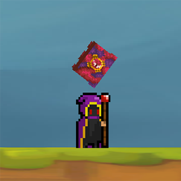
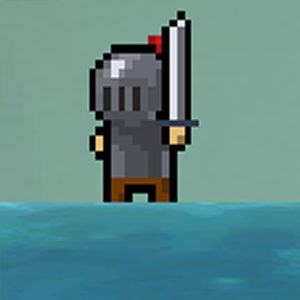
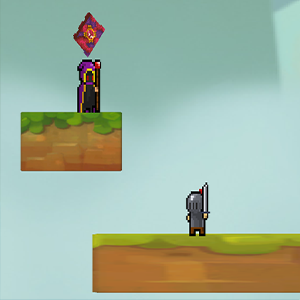

Construct
Construct é uma plataforma onde qualquer pessoa pode ir e criar seu próprio jogo sem qualquer conhecimento de programação no decorrer da matéria de Experiência Criativa, foi solicitada a criação de um joguinho através da plataforma, então eu e o meu grupo, Leonardo Scannavacca Falango, Enzo Bloss Stival, Jeniffer Pamela Schulcztz, Kayo Renato Bortolan Cezario, fizemos um pequeno joguinho de apenas duas fases onde no final você derrotaria o rei e se casaria com a princesa, segue algumas imagens e logo em seguida, um botão, caso você queira jogar! foram utilizados alguns assets do falecido Maple Story 2, não mais disponíveis
